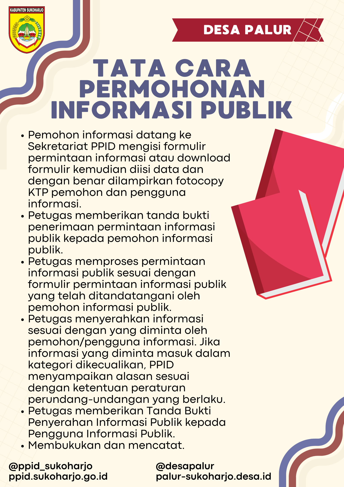
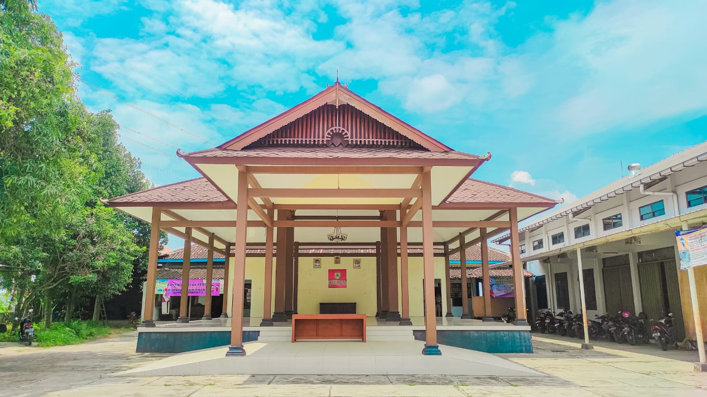
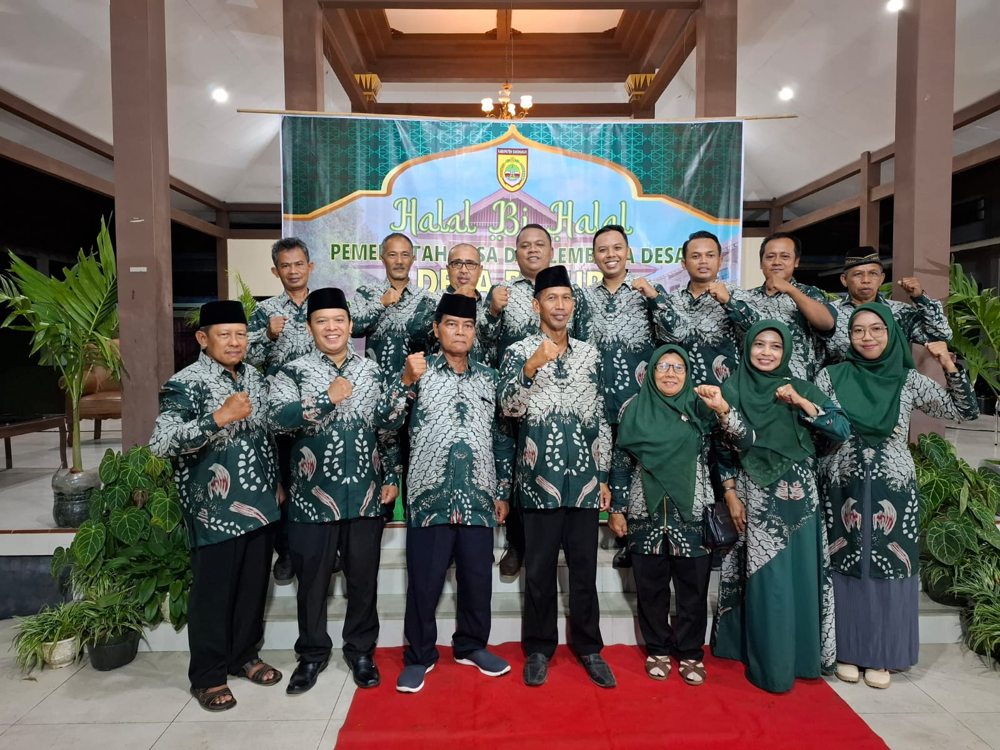
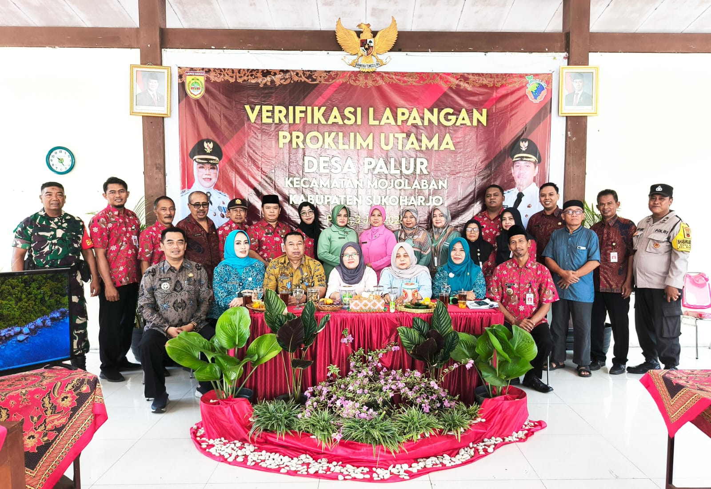
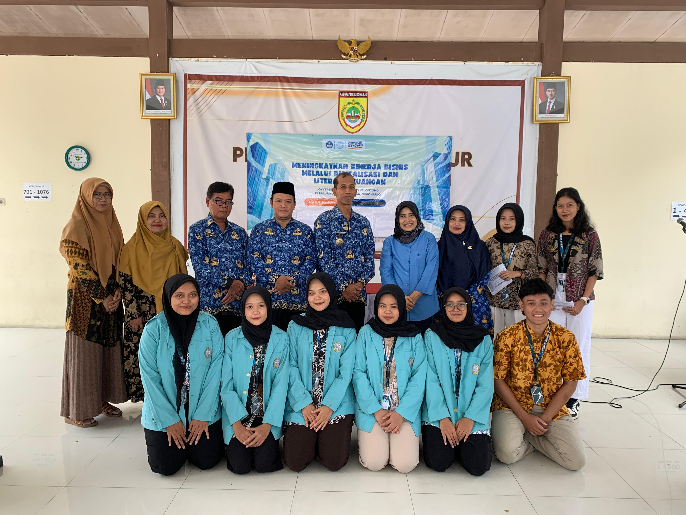

Tata Cara Permohonan Informasi Publik
Panduan alur permohonan informasi publik kepada Pejabat Pengelola Informasi dan Dokumentasi (PPID) Desa Palur.
Sugeng Rawuh Wonten Website
Maju, Aman, Konstitusional, Mantap, Unggul, & Rapi

Website resmi Desa Palur, Kecamatan Mojolaban, Kabupaten Sukoharjo, hadir sebagai pusat informasi dan layanan publik bagi warga desa.
Melalui halaman ini, masyarakat dapat mengakses berita terbaru, layanan administrasi, program desa, serta berbagai potensi lokal yang dimiliki Desa Palur.
Selengkapnya


Belum ada video.

Panduan alur permohonan informasi publik kepada Pejabat Pengelola Informasi dan Dokumentasi (PPID) Desa Palur.

Foto bersama perangkat desa, pelaku UMKM dan kelompok HIBAH MBKM UNS 2024. Sukoharjo, 17 ...
Akses website resmi Desa Plumbon untuk layanan dan informasi desa.
Masuk ke Desa Plumbon ↗Akses website resmi Desa Gadingan untuk profil dan layanan desa.
Masuk ke Desa Gadingan ↗Kembali ke portal utama Pemerintah Kecamatan Mojolaban.
← Kembali ke Portal Kecamatan